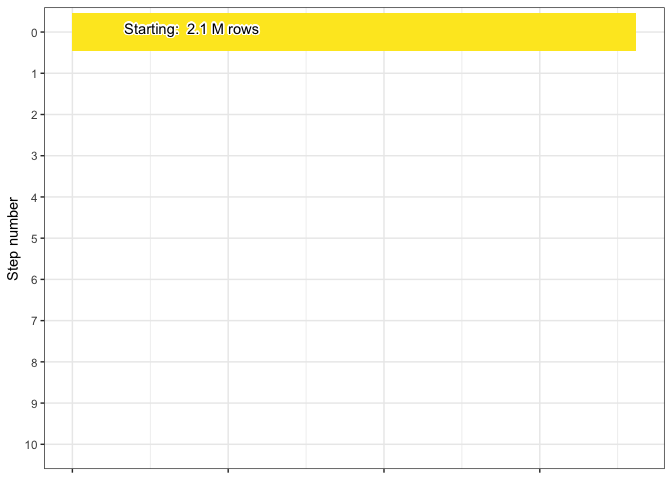
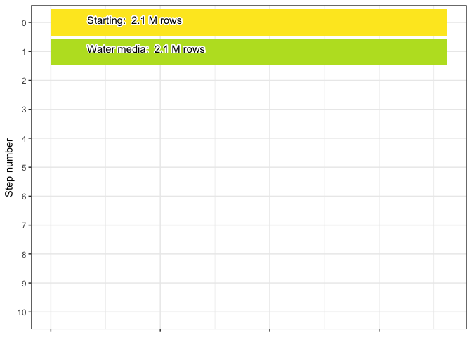
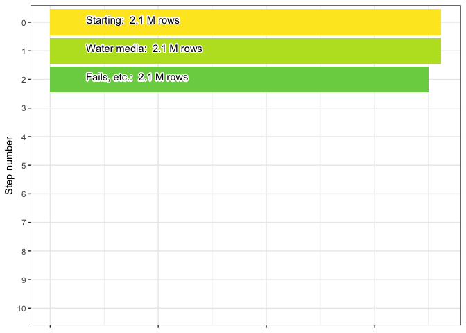
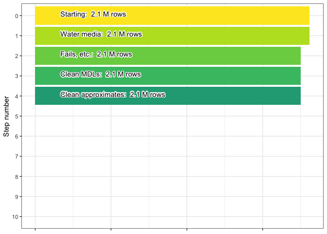
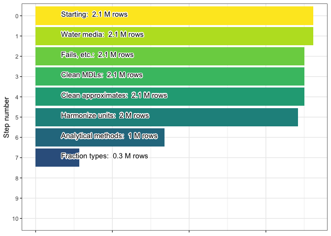

5 DOC harmonization process (strict version)
5.0.1 0. Initial dataset
After the preharmonization process the DOC-only WQP dataset contains 2.15 million rows.

5.0.2 1. Filter for water media
The first step in DOC harmonization is to ensure that the media type for
the data is "water" or "Water". This should just be a precautionary
step: 0 rows are removed. The final row count after this is 2.15
million.

5.0.3 2. Remove fails and other missing data
In this step we filter out records based on indications that they have
failed data for some reason. We screen the following columns:
ActivityCommentText, ResultLaboratoryCommentText,
ResultCommentText, ResultMeasureValue, and
ResultDetectionConditionText. Examples of text that results in a
dropped record includes (but is not limited to): "fail", "suspect",
"error", "beyond accept", "interference", "questionable",
"problem", "violation", "rejected", "no data". Specific target
text varies by column.
72.25 thousand rows are removed and 2.08 million rows remain.

5.0.4 3. Clean MDLs
In this step method detection limits (MDLs) are used to clean up the
reported values. When a numeric value is missing for the data record
(i.e., NA or text that became NA during an as.numeric call) we
check for non-detect language in the ResultLaboratoryCommentText,
ResultCommentText, ResultDetectionConditionText, and
ResultMeasureValue columns. This language can be "non-detect",
"not detect", "non detect", "undetect", or "below".
If non-detect language exists then we use the
DetectionQuantitationLimitMeasure.MeasureValue column for the MDL,
otherwise if there is a < and a number in the ResultMeasureValue
column we use that number instead.
We then use a random number between 0 and 0.5 * MDL as the record’s
value moving forward.
This should not result in a change in rows but we still check: 0 rows are removed. The final row count after this is 2.08 million.

5.0.5 4. Clean approximate values
Step 4 involves a similar process as for MDL cleaning. We flag
“approximated” values in the dataset. The ResultMeasureValue column
gets checked for all three of the following conditions:
- Numeric-only version of the column is still
NAafter MDL cleaning - The original column text contained a number
- Any of
ResultLaboratoryCommentText,ResultCommentText, orResultDetectionConditionTextmatch this regular expression, ignoring case:"result approx|RESULT IS APPROX|value approx"
We then use the approximate value as the record’s value moving forward.
This should not result in a change in rows but we still check: 0 rows are removed. The final row count after this is 2.08 million.

5.0.6 5. Harmonize record units
The next step in doc harmonization is working with the units of the WQP records. These can vary widely. We create the following conversion table, which is used to translate units provided in WQP into milligrams/L:
| units | conversion |
|---|---|
| mg/L | 1.000e+03 |
| mg/l | 1.000e+03 |
| ppm | 1.000e+03 |
| ug/l | 1.000e+00 |
| ug/L | 1.000e+00 |
| mg/m3 | 1.000e+00 |
| ppb | 1.000e+00 |
| mg/cm3 | 1.000e+06 |
| ug/ml | 1.000e+03 |
| mg/ml | 1.000e+06 |
| ppt | 1.000e-06 |
| umol/L | 6.008e+01 |
We also limit values to less than 50 mg/L to ensure realistic data. 47.11 thousand rows are removed. The final row count after this is 2.03 million.

5.0.7 6. Filter based on analytical method
Our next step is to aggregate doc analytical methods into groups and
then filter out methods that may have been erroneously added, were
unclear, or which don’t meet our needs. Methods that were NA or were
grouped as "Ambiguous" or "Carbonaceous Analyzer" are dropped.
This process drops 1032.73 million rows leaving 1 million remaining.

5.0.8 7. Filter based on fraction type
The final step in our doc harmonization is filtering based on the
ResultSampleFractionText column. We keep records with the following
values in this column: "Dissolved", "Filtered, lab", "Filterable",
"Filtered, field".
This process drops 657.28 thousand rows leaving 0.34 million remaining in the final harmonized doc dataset.
